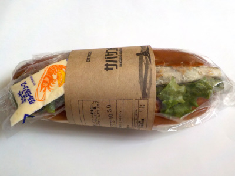

いいものを探そう ～出雲らへん～
島根県出雲市多伎町口田儀90-4
2022/10/30
IZUMOAIのサバサンド

近頃土日になると各地であるマルシェで買いました。
後から思ったことですが、天気も良かったのでお店にドライブして買いに行けば良かったです。たぶんそっちの方が楽しかっただろうな。
サバサンドですが、袋を開けたらパンの香ばしい匂いがしました。サバの匂いじゃないんですね。
大きなサバが入ってて、サバ味があるんですがあっさりとしていました。焼きサバとか塩サバみたいな濃い味ではなかったので、パンとの相性が良かったです。
タルタルソースや中に入ってたレモンとも味がよく合ってて、美味しかったです。
サバはノルウェー産、お値段は600円でした。
【雲藍TOP】
【地域TOP】
【HPTOP】
【『多伎町らへん』の他の情報はこちら】
【おいしいものを食べよう。】【たくさん寝よう。】
【ソロ活をしよう!】【季節感のあることをしよう。】【動画視聴はほどほどに。】【当サイトの全てのコンテンツは無断転載禁止です。】